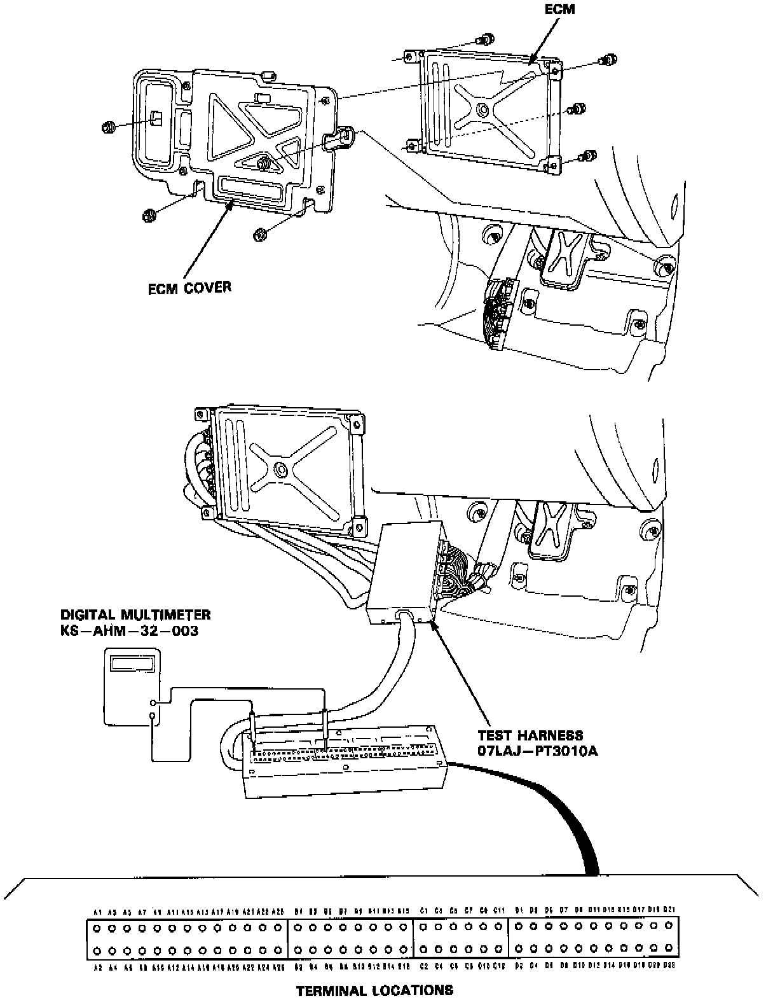
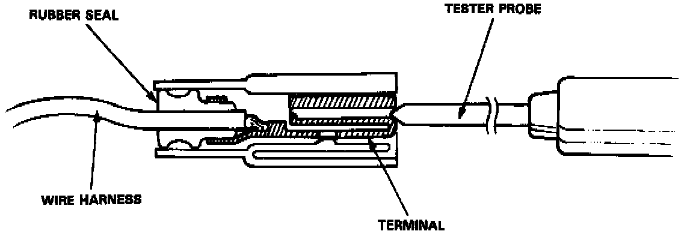

Inspecting Harness or Connectors

If the inspection for a particular failure code requires the test harness, remove the right door sill molding and the small cover on the right kick panel and pull the carpet back to expose the engine control module. Unbolt the engine control module cover. Connect the test harness. Check the system according to the procedure described for the appropriate code(s).
CAUTION: Puncturing the insulation on a wire can cause poor or intermittent electrical connections.

For testing at connectors other than the test harness, bring the tester probe into contact with the terminal from the connector side of wire harness connectors in the engine compartment. For female connectors, just touch lightly with the tester probe and do not insert the probe.